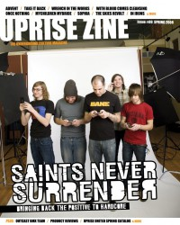

CMnexus
:
Contemporary Christian culture, music, and media.
Magazines
Profiles
Dove Awards
cmnexus.org
CM
nexus
→
Magazine list
→
Uprise Zine
→
Issues
Uprise Zine
, Spr 2008, #9
< -- Prev
Issue list
Next -- >
Cover

Writers in this Issue
Cicione, Rebecca
Darr, Dave
Harp, Lloyd
McGaha, Connor
Salazar, Carlos
Sporleder, Amy
Whitney, Chris
Saints Never Surrender
Cover Feature:
Saints Never Surrender
Interview:
"Outcast BMX"
Lucas Hastay interviewed
Featured Bands:
Advent
Take It Back!
Once Nothing
In Irons
Wrench in the Works
Blurb Spot:
Sophia
The Skies Revolt
Stand Your Ground
Red Flecks
Album Review:
MyChildren MyBride
-
Unbreakable
by Lloyd Harp
With Blood Comes Clensing
-
Horror
by Amy Sporleder
Thieves and Liars
-
When Dreams Become Reality
by Dave Darr
With Blood Comes Clensing
-
Horror
by Connor McGaha
Ivoryline
-
There Came A Lion
by Rebecca Cicione
Edison Glass
-
Time Is Fiction
by Rebecca Cicione
In Irons
-
Heartbeat of the Times
by Connor McGaha
For Today
-
Ekklesia
by Carlos Salazar
Here I Come Falling
-
Oh Grave, Where Is Thy Victory
by Lloyd Harp
Through Solace
-
The Stand
by Connor McGaha
Death Is Not Welcome Here
-
Freedom for the Broken
by Connor McGaha
Pastor Chris Whitney's Column:
"Peace Out" by Chris Whitney
This is the final issue of
Uprise Zine
.
< -- Prev
Issue list
Next -- >
CMnexus
(noun)
The magazine index
of modern music
and Christianity
© 2011 CMnexus. Last updated April 2021.
Contact:
Rants and other correspondence to:
editor -AT- cmnexus
-DØT- org
About